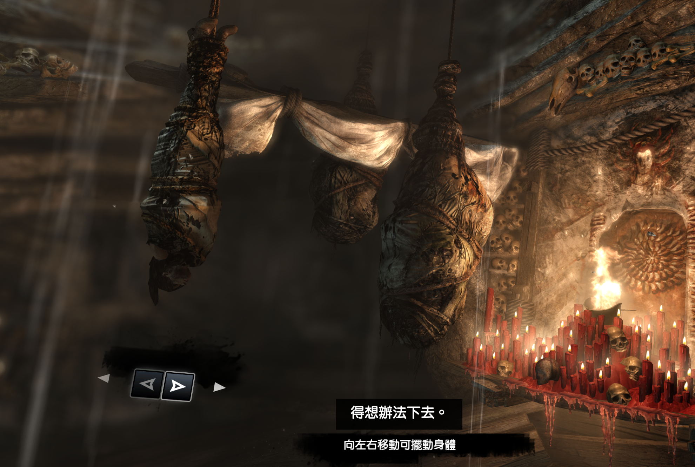
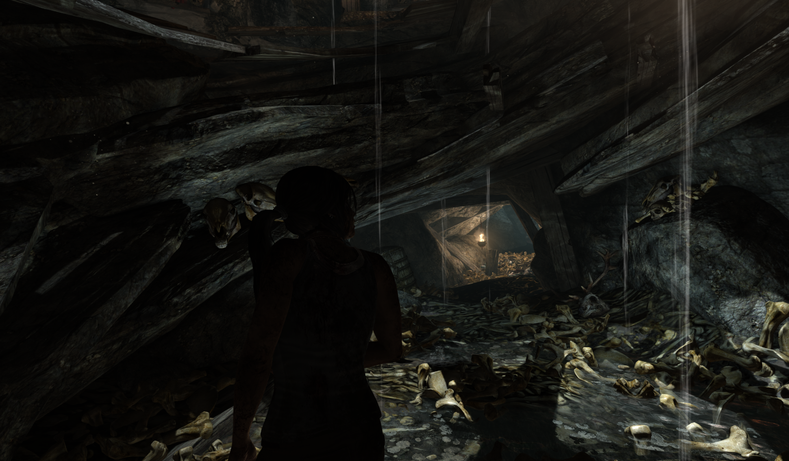

Tomb Raider (2013) 序章教学关——从机制引入、空间叙事到引导设计，完整剖析 Crystal Dynamics 的关卡教学体系方法论。
将本关涉及的机制抽象为若干统一术语，便于后文精确讨论教学节奏、引导方式与情绪曲线。这些概念可迁移至其他动作冒险/生存类游戏的通用设计工具。
新机制在"不做此操作就无法前进"的情境中自然引入。玩家无需教程文字，环境本身就是教材。如洞穴中只能匍匐前进 → 教会爬行操作。
本质：用关卡几何体替代对话框"先教玩家怎么认教程"。通过展示无效按键 → 延迟提示的正反对比，建立玩家对本游戏教程体系的信任契约。
本质：降低后续所有教学的解释成本后期事件有意呼应前期体验，形成情感闭环。如后期获得攀爬能力 callback 开场的无力爬行——让机制教学同时服务于角色成长叙事。
本质：游戏性 = 角色成长的具象化表达正常探索时依赖光影、地形漏斗、视觉高亮等隐性手段；仅当检测到困惑行为（原地停留超时）后才介入 UI 显性指引。
本质：沉浸感优先的引导哲学物理移动路径与角色情感弧线同步设计。"向下坠落=失去控制 → 向前摸索=逐步获取能力 → 向上攀登=夺回主导权"的三段式结构。
本质：关卡几何 = 叙事的物理化表达单路径主轴无分岔，所有玩家的行进路线完全一致。适合教学关场景——保证每个玩家的学习内容完全相同，便于精确控制体验节奏。
本质：以牺牲自由度换取教学可控性整个序章为纯线性单轴路径，A→E 共 5 个节点依次串联，不存在任何分支或回环结构。

Tomb Raider (2013) · 序章 Prologue
纯线性教学关
单轴线性路径，无分支、无回环
角色起源故事 · 核心操作基础教学 · 从无力到自主的心理弧线第一幕
让玩家从零操作基础掌握基础移动与生存技能，完成劳拉从"受害者"到"幸存者"的转变

Scripted Event · 空间-叙事双重推进
劳拉在篝火处失足跌落至洞穴更深处，再次强调角色的无力状态——"你以为安全了，其实没有"。
将玩家推向更深层的未知区域，物理纵深进一步加深，"不断坠入未知"的空间隐喻被强化。
一次精心编排的失控事件同时推进叙事深度和空间转换，一举两得——这正是 Callback 叙事与空间-心理同构的交汇点。
将序章的玩家体验按时间顺序拆分为 5 个独立阶段，每个阶段从行动目标、体验目标与实现手段三个维度进行分析。
三种引导类型在不同阶段的分布与协作方式。
| 引导类型 | 具体表现 | 触发条件 | 覆盖阶段 |
|---|---|---|---|
| 隐性引导 | 光影指向（火光/出口光）、地形漏斗（唯一通路）、物体高亮（互动物态）、Agent 思考旁白、声音线索（水流声/风声） | 持续存在 | ①~⑤ 全程 |
| 显性引导 | 屏幕底部 UI 文字提示（"向左/右移动可挪动身体"）、按键图标高亮、目标箭头 | 检测到困惑行为（原地停留超时 / 反复失败） | ②③④ 主要 |
| 元级引导 | 先展示无效按键 → 再教正确用法（反向教学模式），建立教程体系信任 | 首次接触教程系统的特定时刻 | ② 仅一次 |
光影指向、地形漏斗、物体高亮等环境暗示手段，沉浸感优先，持续存在于全程。
UI 文字提示与按键图标，仅在检测到困惑行为时触发，避免过度打断沉浸。
"先教怎么认教程"的反向教学模式，一次性投入建立信任契约，降低后续教学成本。
将序章的体验抽象为情感强度曲线——横轴为关卡事件序列，纵轴为多维情感强度的叠加值。
| 阶段 | 情绪特征 | 设计意图 |
|---|---|---|
| ①~② | 低紧张 + 低掌控（焦虑基底） | 建立脆弱感基调，让玩家"和劳拉一起害怕" |
| ③ | 中度波动（短暂希望 → 跌落惊吓） | 火把带来一丝控制感，随即被跌落事件打破——"你以为安全了，其实没有" |
| ④ | 掌控感陡升（能力膨胀段） | 密集投放攀爬/收集/投石技能，Callback 叙事在此达到最强——从匍匐到站立再到攀爬 |
| ⑤ | 高紧张 + 高掌控 → 释然释放 | 峰终效应（Peak-End）：以最高强度的综合考验 + 成功逃脱作为记忆锚点 |
用一次元级教学告诉玩家"这个游戏的教程长什么样"，此后所有教学均可轻量交付。
新机制必须在"不做这件事就无法前进"的场景中出现（Forced Context），且同一时刻只教一件事。
新学的机制立即在下一个挑战中被要求使用，形成"教→练→考"的最短闭环。
关卡的主轴移动方向应与角色的情感变化方向同步设计——这不是装饰，而是叙事工具。